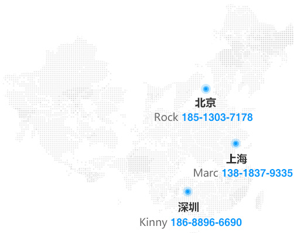

关于南极圈
"南极圈"为腾讯官方唯一认可的离职员工组织，最早起源于2010年2月，由前腾讯员工Eric潘国华和腾讯资深老员工一同创办的“永远一家人”QQ群。现在，"南极圈"通过QQ群、微信群、微信公众号、"极课堂"线下沙龙等组织，聚集了以腾讯离职员工为主的互联网精英数万人。
"南极圈"目前已经覆盖深圳、上海、北京、成都、杭州、厦门、武汉、西安、长沙等城市，以及新加坡、新西兰、澳洲、迪拜、美国、加拿大等国家和地区！
2010年至2014年，"南极圈"为包括红杉资本、钟鼎创投、IDG、国金资本、联创、顺为基金、经纬创投、险峰华兴、真格基金、北极光、KPCB、晨兴创投、德迅投资、高榕资本、GGV、中兴创投、CA投资、嘉御基金、源码资本、策源创投、清流资本，旦恩创投，成为基金、SIG等几十家VC机构及个人，提供了近两百个腾讯系项目对接。
如有创业项目需要融资，可发送项目和联系方式至：vc@nanjiquan.com，我们会免费为你转至相关投资人。
南极圈联系方式
为杜绝非腾讯离职员工加入，特采用推荐制，入群流程如下
1. 找到已经在群里的企鹅
2. 请他(她)向群主或者管理员推荐你(报你的qq号码)
3. 申请加入
4. 加入后请修改群名片：rtx英文昵称+中文名+@公司名
欢迎大家加入：腾讯离职员工QQ群
全国群：31897163
深圳群：180701560
